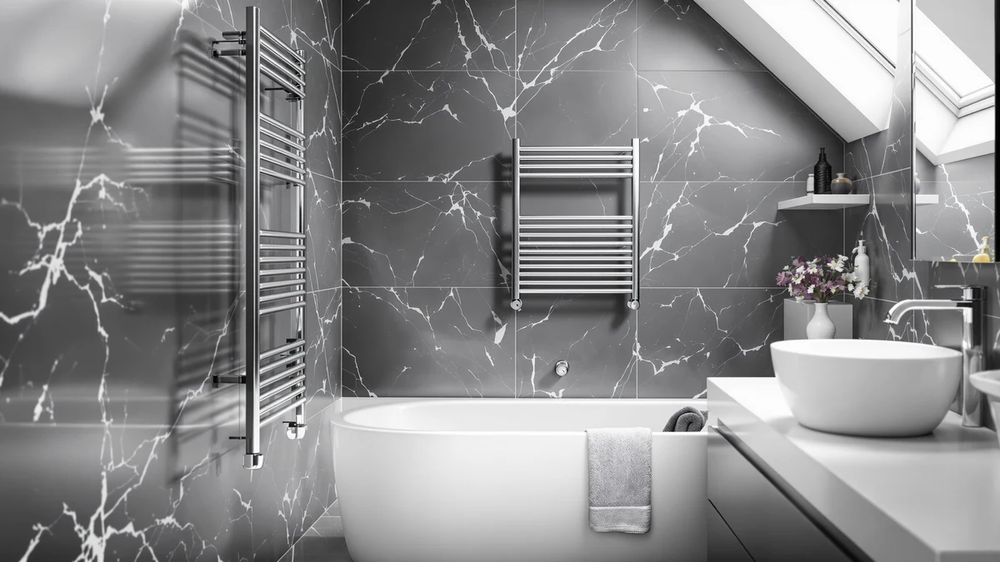

Best Towel Warmers to Gift in 2026 (For People Who Are Always Cold)
Prices and picks verified as of September 2026. Independent, reader-supported reviews.


Things to Know Before You Buy
- Bucket-style warmers are the safest gift pick because they plug into any outlet and need zero installation.
- A built-in timer or auto shut-off matters more for a gift than extra wattage, since you cannot train someone else's habits.
- Capacity is measured in liters for bucket models; 20 to 25 liters fits one bath towel, 30 liters or more fits two.
- Wall-mounted and hardwired racks make a bigger visual statement but are a poor gift for renters or anyone mid-lease.
- Expect to pay $60 to $120 for a well-reviewed model with a timer and a UL or ETL safety listing.
A towel warmer worth giving plugs into a standard outlet, holds at least one full bath towel, and shuts itself off so the recipient never has to think about it. That rules out most of the hardwired wall units built for permanent bathroom remodels and points toward bucket-style warmers and small freestanding racks instead.
Most people who receive one use it within the first week, because a warm towel after a shower is an immediate, obvious comfort rather than a feature someone has to learn to appreciate. That makes towel warmers a rare gift category where the low end of the price range still performs the core job well; a $70 bucket warmer heats a towel about as fast as a $150 one.
The differences that matter for a gift are less about heat output and more about fit. Will it match the recipient's counter or floor space? Does it need an electrician? And will the lid or door close quietly enough for a shared bathroom? We compared specs, capacity, and verified owner reviews across dozens of models to sort out which factors are worth paying for and which are marketing.
What You Need to Know
A towel warmer heats a towel one of two ways: a bucket unit wraps a folded towel around an internal heating core, or a rack warms an open towel draped across bars or rods. Bucket warmers heat faster, usually in 10 to 15 minutes, because the towel sits against the heat source directly. Racks take 30 to 45 minutes but also dry a damp towel more thoroughly, since air moves around the whole surface instead of only the folded core.
For a gift, that distinction matters because you are guessing at someone's routine. A person who showers and wants a towel ready in minutes will prefer a bucket model. A person who hangs the same towel for two or three days between washes will get more daily value from a rack that keeps drying it after each use. When you shop for the best towel warmers for gifts, matching the mechanism to how the recipient actually uses a towel beats chasing the highest wattage number on the box.
Power draw is modest across both types, typically 60 to 200 watts, so running one an hour or two a day adds a few dollars to a monthly electric bill at most. Owners consistently report that the ongoing cost is not what they notice; it is whether the unit fits their counter or wall space and whether the timer actually shuts it off, since a warmer left running all day defeats the point of buying an efficient model in the first place.
Types and Categories
Bucket towel warmers are the default choice among the best towel warmers for gifts, because they need no installation and work in any bathroom, kitchen, or bedroom. You fold a towel, drop it in, close the lid, and it heats without a screwdriver or an outlet upgrade. Capacity ranges from around 20 liters, enough for a single hand towel or one folded bath towel, to 35 liters or more, which fits two bath towels or a robe.
Freestanding and wall-mounted racks look more like a bathroom fixture and heat towels while they hang, which suits someone who wants the towel warm and partly dry rather than fully heated. Freestanding versions plug into an outlet and can move rooms; wall-mounted plug-in versions need a few screws but no electrician. Hardwired racks wire directly into the wall, need professional installation, and belong to home renovation projects rather than gift boxes.
A smaller category, towel warmer drawers, builds the heating element into a cabinet-style unit that can double as storage. These cost more and usually require more counter or floor space, so they fit a recipient renovating a primary bathroom rather than someone testing the category for the first time. For a first gift, a bucket warmer or a small freestanding rack covers the widest range of homes and living situations.
How to Choose
Start with the recipient's living situation, not the product's feature list. Renters and anyone in a home with electrical work they do not control should stay with a plug-in bucket warmer or a freestanding rack. Homeowners planning a bathroom update can handle a hardwired or wall-mounted model, but that decision belongs to them, not to a gift-giver guessing at their next renovation.
Check the safety listing before anything else. A UL or ETL mark on a bucket warmer or rack confirms it passed independent electrical safety testing, which matters more for a gift than any premium finish, since you are handing someone a heating appliance they did not choose themselves. Reviewers consistently flag off-brand units without a listed certification even when the price looks attractive.
Match capacity to the towel size the recipient actually uses. A 20-liter bucket warmer holds one folded bath towel comfortably; anything larger, like a bath sheet or a robe, needs 30 liters or more or it will not close properly. Among the best towel warmers for gifts, the ones that get returned most often are undersized units bought for the price rather than the fit.
Finally, weigh the timer and shut-off behavior over wattage. A model that runs continuously until someone remembers to switch it off wastes electricity and shortens the heating element's life. A 60-minute or 120-minute auto shut-off timer costs little extra and removes the one habit a gift recipient has to build for the product to work well long term. Between two similarly priced options, pick the one with the timer every time.
Common Mistakes to Avoid
Buyers shopping the best towel warmers for gifts most often pick a hardwired or wall-mounted model without checking whether the recipient rents their home. Installing a wired fixture in a rental usually requires landlord approval and reverses at move-out, which turns a thoughtful gift into a logistical problem. A plug-in unit avoids the issue entirely.
Another frequent misstep is buying based on wattage alone. A higher wattage number heats faster but does not mean a better product if the unit lacks a timer, since it can run for hours unattended and raise the electric bill without adding comfort. Owners report that a 200-watt unit with an auto shut-off is more practical day to day than a 300-watt unit without one.
Undersizing capacity is common too. A bucket warmer rated for one hand towel will not close around a full bath towel, and forcing it shortens the seal's lifespan. Check the liter rating against the towel size the recipient actually owns rather than assuming a mid-range model fits everything.
Last, skip anything without a visible UL or ETL safety mark, no matter how good the price looks. A heating appliance without independent certification is not worth the risk in someone else's bathroom, and reputable brands list this certification clearly on the product page.
Care and Maintenance
Bucket towel warmers need little upkeep. Wipe the interior with a dry cloth every few weeks to clear lint, and leave the lid open between uses so trapped moisture can evaporate instead of building up. A unit that stays closed while damp is more likely to develop a musty smell than one that airs out for even a few minutes.
Wall-mounted and freestanding racks benefit from an occasional wipe-down of the bars, since soap residue and hard water spots build up faster on metal that heats and cools daily. A microfiber cloth and a mild household cleaner handle this; avoid abrasive pads, which can scratch a chrome or brushed-nickel finish.
Check the power cord and outlet periodically for wear, and unplug the unit if it will sit unused for an extended stretch, such as during travel. Among the best towel warmers for gifts, the models that last longest are the ones the recipient plugs in only when needed rather than leaving connected around the clock, which reduces strain on both the heating element and the outlet.
Our Top Picks
These three models cover the range most gift-givers ask about: a well-rounded bucket warmer, a step-up option with a nicer finish, and a larger unit for someone who wants extra capacity.

Editor’s Pick
SereneLife Luxury Rectangle Towel Warmer
A rectangular bucket warmer with a soft-close lid and room for two towels, a solid default when you are not sure what the recipient already owns.
$89.99
Check Price on Amazon
Best Value
Di’Aroma Luxury Towel Warmer Bucket
A wood-grain bucket warmer that looks more like a bathroom accessory than an appliance, worth the extra cost for a recipient who cares about how it sits on the counter.
$99.99
Check Price on Amazon
Premium Choice
VIPBATH 35L Towel Warmer for
A 35-liter warmer with enough room for a bath sheet or two standard towels, the pick for someone who wants more capacity than an entry-level bucket.
$59.99
Check Price on AmazonIs a towel warmer a good gift?
Yes, for most people.
How much should I spend on a towel warmer gift?
Between $60 and $120 covers most well-reviewed models, including bucket warmers, freestanding racks, and small wall units.
Frequently Asked Questions
Is a towel warmer a good gift?
Yes, for most people. Towel warmers rank among the more-used gifts because they solve a small daily discomfort rather than sitting on a shelf. The best towel warmers for gifts fit almost any bathroom and start working the first morning someone plugs one in, which is more than most gifts can claim by day two.
How much should I spend on a towel warmer gift?
Between $60 and $120 covers most well-reviewed models, including bucket warmers, freestanding racks, and small wall units. Prices above that usually pay for WiFi controls, larger capacity, or premium finishes rather than meaningfully better heat output.
Do towel warmers need professional installation?
No, if you choose a plug-in or freestanding model. Bucket warmers and freestanding racks work in any outlet and need no tools, which makes them a safer gift for renters or anyone you are not sure wants a permanent bathroom fixture. Hardwired models need an electrician and suit homeowners planning a renovation.
What size towel warmer should I buy as a gift?
A 20 to 25-liter bucket warmer fits one folded bath towel and works for most recipients. If you know they use bath sheets, oversized towels, or want to warm a robe as well, look for 30 liters or more so the lid closes without forcing the towel.
Will a towel warmer work in an apartment or rental?
Yes, as long as it is a plug-in bucket warmer or freestanding rack. These need only a standard outlet and travel with the recipient if they move, unlike hardwired or built-in wall units, which stay with the property and typically need landlord approval to install.
Verdict
When you shop for the best towel warmers for gifts, favor a plug-in bucket model with a listed safety certification and a built-in timer over anything hardwired or oversized on wattage. Those two features do more for a good gift experience than any premium finish, since the recipient gets a warm towel within minutes and never has to remember to switch the unit off. A SereneLife bucket warmer covers that brief well: it needs no installation, holds a standard bath towel, and closes with a soft-close lid that works quietly in a shared bathroom.
If the recipient already leans toward smart home gadgets, the WiFi-enabled SereneLife model or a larger-capacity option makes sense as a step up. For everyone else, a straightforward bucket warmer in the $70 to $100 range delivers the daily comfort a towel warmer promises without asking the giver to guess at a renovation timeline or an electrician's schedule.